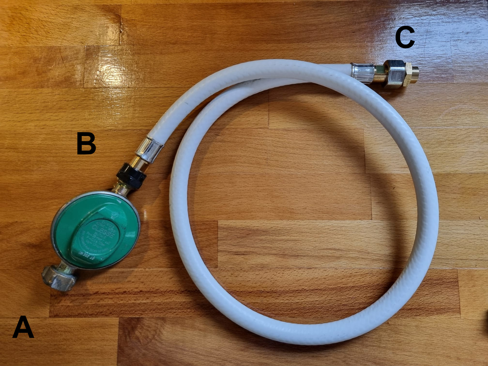
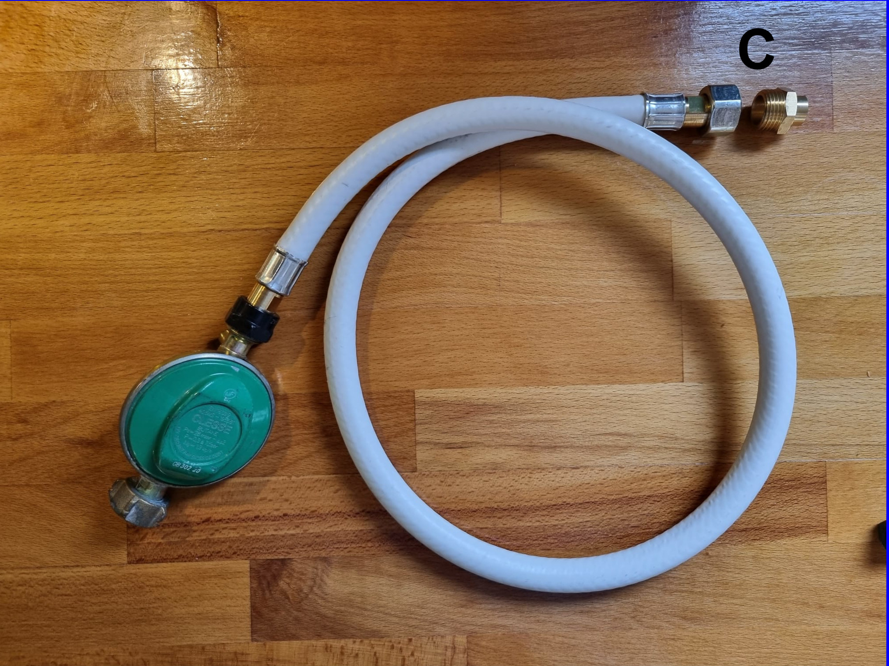
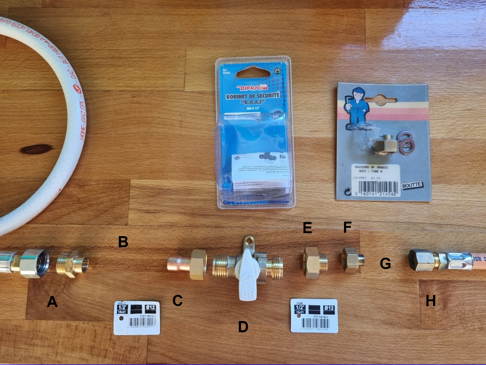
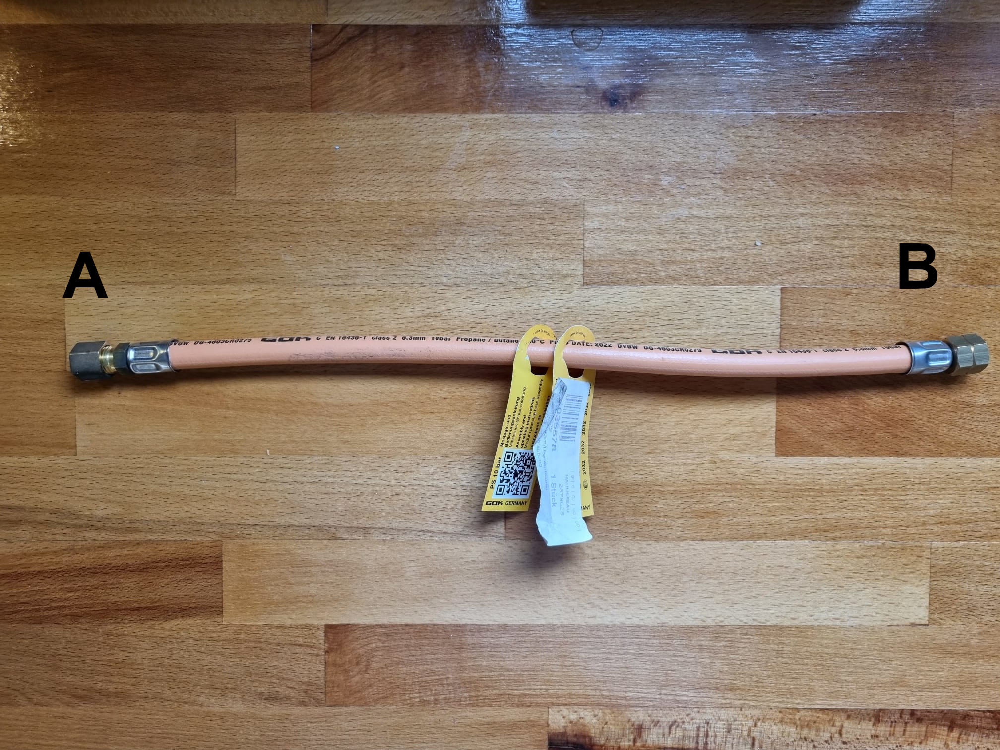
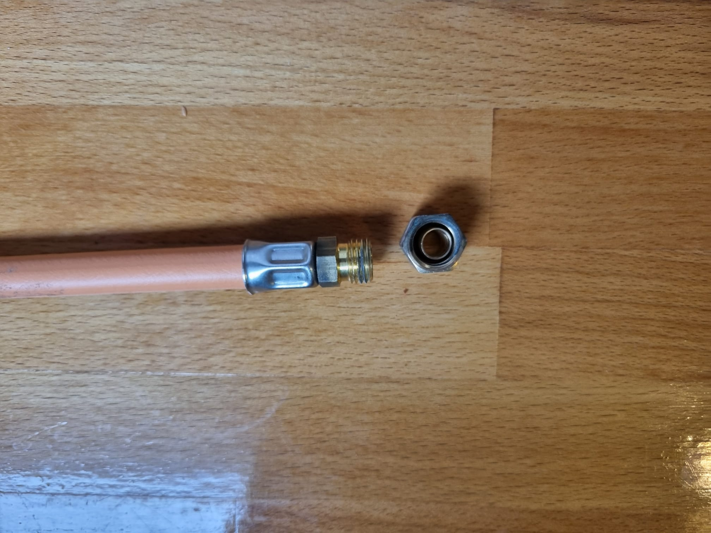

Raccordement du gaz à bord des bateaux
Figure 1

- A - Connexion au détendeur, 1/2", pas à gauche
- B - Connexion détendeur - tuyau souple, 1/2", pas à droite
- C - Connexion au tube de cuivre (12mm), 1/2", pas à droite
Figure 2

-
C - Connexion au tube de cuivre (12mm), 1/2", pas à droite, raccord ici deconnecté.
Le tube de cuivre est connecté sur ce raccord.
Figure 3

- A - Connexion flexible-cuivre de 12mm. 1/2", pas à droite, comme le C ci-dessus. À souder.
- B - Tuyau en cuivre 12mm (ne figure pas sur la photo)
- C - Connexion du tube en cuivre 12mm sur la vanne 1/4 de tour, 1/2", pas à droite. À souder.
- D - Vanne 1/4 de tour, 1/2" pas à droite de chaque côté.
- E - Raccord 1/2" - 3/8"
- F - Raccord du tube 8mm sur le 3/8". Pas à droite. À souder,
- G - Tube en cuivre 8mm (ne figure pas sur la photo)
- H - Raccord Olive, tube 8mm (voir A ci-dessous)
Figure 4

Raccord vers le réchaud.
- A - Raccord tube en cuivre 8mm (une olive)
- B - Raccord au réchaud, 1/4", pas à gauche.
Figure 5

Raccord A ci-dessus, ouvert, pour voir l'olive. Le tube doit faire 8mm.
© Passe-Coque, 2025